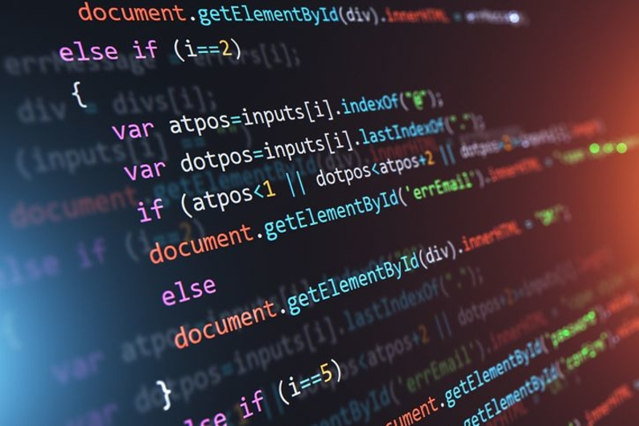

A disciplina de Iniciação à Programação apresenta os fundamentos da lógica de programação e desenvolvimento de algoritmos. Os principais tópicos incluem:
Essa disciplina é essencial para o desenvolvimento de habilidades de programação e resolução de problemas computacionais.
